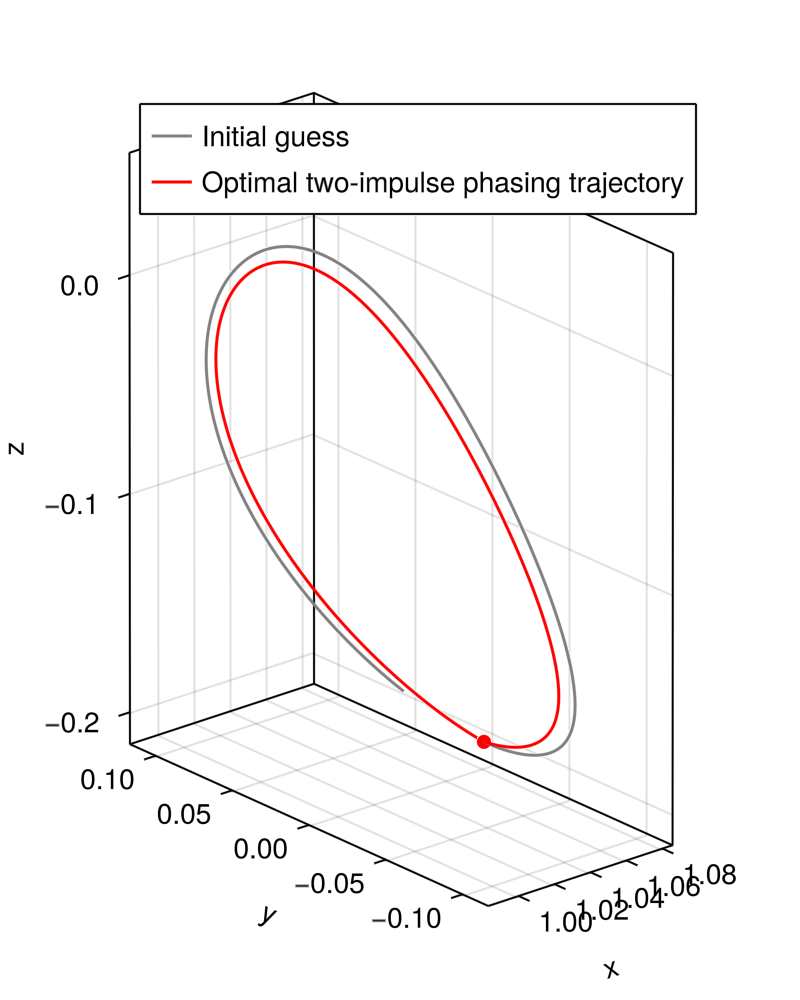

Basics with NLPSaUT.jl
A simple algebraic NLP
Let's suppose we would like to solve the following NLP
\[\begin{aligned} \min_{x_1,x_2} \quad& x_1^2 - x_2 \\\text{such that}\quad& x_1^3 + x_2 - 2.4 = 0 \\& x_1 + x_2 - 5 \leq 0 \\& -0.3x_1 + x_2 - 2 \leq 0 \end{aligned}\]
We first import the necessary modules
using GLMakie
using Ipopt
using JuMP
push!(LOAD_PATH, joinpath(@__DIR__, "../src/"))
using NLPSaUTWe now define the problem dimension along with a fitness function that computes the objective, equality, and inequality constraints.
# problem dimensions
nx = 2 # number of decision vectors
nh = 1 # number of equality constraints
ng = 2 # number of inequality constraints
lx = -10*ones(nx,) # lower bounds on decision variables
ux = 10*ones(nx,) # upper bounds on decision variables
x0 = [-1.2, 10] # initial guess
# fitness function
function f_fitness(x::T...) where {T<:Real}
# objective
f = x[1]^2 - x[2]
# equality constraints
h = zeros(T, 1)
h = x[1]^3 + x[2] - 2.4
# inequality constraints
g = zeros(T, 2)
g[1] = x[1] + x[2] - 5
g[2] = -0.3x[1] + x[2] - 2
return [f; h; g]
endWhen defining a fitness function, ensure the following:
- The returned argument is a 1D array in order
f(objective),h(equality constraints, if any),g(inequality constraints, if any). - Inequality constraints are provided the general form $g(x) <= 0$.
- The input argument signature is
f_fitness(x::T...) where {T<:Real}- this is required as long asForwardDiff.jlis to be used for gradients. - The input argument
xis a 1D array
We can now construct a JuMP model. Here, we will use Ipopt.
model = NLPSaUT.build_model(Ipopt.Optimizer, f_fitness, nx, nh, ng, lx, ux, x0)
set_optimizer_attribute(model, "tol", 1e-12)
set_optimizer_attribute(model, "print_level", 5)We can view the model via println(model), which returns
Min fobj(x[1], x[2])
Subject to
op_h_1(x[1], x[2]) - 0.0 = 0
op_g_1(x[1], x[2]) - 0.0 ≤ 0
op_g_2(x[1], x[2]) - 0.0 ≤ 0
x[1] ≥ -10
x[2] ≥ -10
x[1] ≤ 10
x[2] ≤ 10and solve it!
optimize!(model)We can check what we got
xopt = value.(model[:x]) # extract optimal decision
@assert is_solved_and_feasible(model)
println(termination_status(model))
println("Decision vector: ")
println(xopt)
println("Objective: ")
println(objective_value(model))Let's visualize the results:
fig = Figure(size=(500,500))
ax = Axis(fig[1,1], xlabel="x1", ylabel="x2")
xs_grid = LinRange(-11, 11, 100)
ys_grid = LinRange(-11, 11, 100)
contourf!(ax, xs_grid, ys_grid, (x, y) -> f_fitness(x, y)[1], levels=20)
# plot constraints
lines!(ax, [x for x in xs_grid], [2.4 - x^3 for x in xs_grid], color=:blue)
fill_between!(ax, xs_grid, maximum(xs_grid) * ones(length(xs_grid)),
[0.3x + 2 for x in xs_grid], color=:black, alpha=0.35)
fill_between!(ax, xs_grid, maximum(xs_grid) * ones(length(xs_grid)),
[5 - x for x in xs_grid], color=:black, alpha=0.35)
# plot solution
scatter!(ax, [value(model[:x][1])], [value(model[:x][2])], markersize=5, color=:red)
# set bounds
xlims!(ax, minimum(xs_grid), maximum(xs_grid))
ylims!(ax, minimum(ys_grid), maximum(ys_grid))
display(fig)
An example with ODEProblem
Let us now consider a trajectory design problem, where we need to integrate some dynamics. Specifically, we will consider the design of a phasing trajectory along a halo orbit with two impulses in the CR3BP dynamics. Let $P$ denote the orbital period of the halo orbit; we wish to come back to the initial position $r_0$ with a time of flight of $0.9P$.
Let $\Delta v$ denote the initial maneuver vector, and $\bar{r}$ and $\bar{v}$ denote the initial position and velocity vecor along the halo orbit. Mathematically (with a bit of abuse of notation), this can be written as
\[\begin{aligned} \min_{\Delta v} \quad& \| \Delta v \|_2 + \| \bar{v} - v(0.9P) \|_2 \\\text{such that}\quad& \bar{r} - r(0.9P) \end{aligned}\]
where $r(0.9P)$ and $v(0.9P)$ is the position and velocity at time $t = 0.9P$, obtained by solving the initial value problem
\[\begin{aligned} \dot{r} &= v \\ \dot{v} &= -\dfrac{1-\mu}{\|r_1\|^3}r_1 - \dfrac{\mu}{\|r_2\|^3}r_2 - \omega \times (\omega \times r) - 2\omega \times r \\ r(0) &= \bar{r} \\ v(0) &= \bar{v} + \Delta v \end{aligned}\]
with $\omega = [0,0,1]^T$, $r_1 = r - [-\mu,0,0]^T$, and $r_2 = r - [1-\mu,0,0]^T$.
We first load necessary modules, then define the dynamics in a compatible form to OrdinaryDiffEq
using GLMakie
using Ipopt
using JuMP
using LinearAlgebra
using OrdinaryDiffEq
include(joinpath(@__DIR__, "../src/NLPSaUT.jl"))
function cr3bp_rhs!(du,u,p,t)
# unpack state
x, y, z = u[1], u[2], u[3]
vx, vy, vz = u[4], u[5], u[6]
# compute distances
r1 = sqrt( (x+p[1])^2 + y^2 + z^2 );
r2 = sqrt( (x-1+p[1])^2 + y^2 + z^2 );
# derivatives of positions
du[1] = u[4]
du[2] = u[5]
du[3] = u[6]
# derivatives of velocities
du[4] = 2*vy + x - ((1-p[1])/r1^3)*(p[1]+x) + (p[1]/r2^3)*(1-p[1]-x);
du[5] = -2*vx + y - ((1-p[1])/r1^3)*y - (p[1]/r2^3)*y;
du[6] = -((1-p[1])/r1^3)*z - (p[1]/r2^3)*z;
return
endLet us define the initial conditions, period, and $\mu$ for the CR3BP system
rv0 = [1.0809931218390707, 0.0, -2.0235953267405354E-01,
0.0, -1.9895001215078018E-01, 0.0]
period_0 = 2.3538670417546639E+00
tspan = [0.0, 0.9*period_0]
μ = 1.215058560962404e-02
params_ode = [μ,]We will now define a conveninence method for propagating the trajectory - this will be used inside the fitness function, as well as for plotting later on:
base_ode_problem = ODEProblem(
cr3bp_rhs!,
rv0,
tspan,
params_ode,
)
function get_trajectory(DV::T...) where {T<:Real}
ode_problem = remake(base_ode_problem; u0 = rv0 + [0; 0; 0; DV...])
sol = solve(ode_problem, Tsit5(); reltol = 1e-12, abstol = 1e-12)
return sol
endWe are now ready to define our problem dimension & fitness function
nx = 3
nh = 3
ng = 0
lx = -0.5 * ones(nx,)
ux = 0.5 * ones(nx,)
x0 = [0.0, 0.0, 0.0]
function f_fitness(DV::T...) where {T<:Real}
# integrate trajectory
sol = get_trajectory(DV...)
# final state deviation
xf = sol.u[end]
# objective
f = norm(DV) + norm(rv0[4:6] - xf[4:6])
# equality constraints for final state
h = rv0[1:3] - xf[1:3]
return [f; h]
endLet's solve it!
# get model
order = 2
diff_f = "forward"
model = NLPSaUT.build_model(Ipopt.Optimizer, f_fitness, nx, nh, ng, lx, ux, x0; disable_memoize = false)
set_optimizer_attribute(model, "tol", 1e-12)
set_optimizer_attribute(model, "print_level", 5)
println(model)
# run optimizer
optimize!(model)
xopt = value.(model[:x])
# checks
@assert is_solved_and_feasible(model)We can plot the resulting trajectory via
# plot
sol_initialguess = get_trajectory(x0...)
sol_optimal = get_trajectory(xopt...)
fig = Figure(size=(400,500))
ax = Axis3(fig[1,1]; aspect = :data, xlabel = "x", ylabel = "y", zlabel = "z")
scatter!(ax, [rv0[1]], [rv0[2]], [rv0[3]], markersize = 10, color = :red)
lines!(ax, Array(sol_initialguess)[1,:], Array(sol_initialguess)[2,:], Array(sol_initialguess)[3,:],
color = :grey, label="Initial guess")
lines!(ax, Array(sol_optimal)[1,:], Array(sol_optimal)[2,:], Array(sol_optimal)[3,:],
color = :red, label="Optimal two-impulse phasing trajectory")
axislegend(ax)
display(fig)